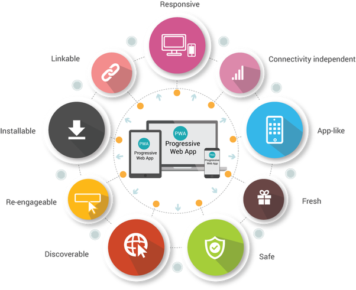

- Progresiva: Funciona para todos los usuarios, independientemente de la elección del navegador, utilizando principios de mejora progresiva.
- Adaptable: Se adapta a cualquier factor de forma: computadora de escritorio, dispositivo móvil, tableta o formato que aún no han surgido.
- Más rápido después de la carga inicial: Una vez finalizada la carga inicial, no es necesario volver a descargar el mismo contenido y elementos de página cada vez.
- Conectividad independiente: Los service worker permiten usos fuera de línea o en redes de baja calidad.
- Como una aplicación: Se siente como una aplicación para el usuario con interacciones y navegación de estilo de aplicación.
- Actualizada: Siempre actualizado debido al proceso de actualización del trabajador de servicio.
- Detectable: Identificable como una "aplicación" por manifest. Json y el registro del service worker, y detectable por los motores de búsqueda.
- Reconectable: Capacidad de utilizar notificaciones push para mantener la experiencia de usuario.
- Instalable: Proporciona iconos de la pantalla de inicio sin el uso de una tienda de aplicaciones.
- Vinculable: Se puede compartir fácilmente a través de una URL y no requiere una instalación compleja.
